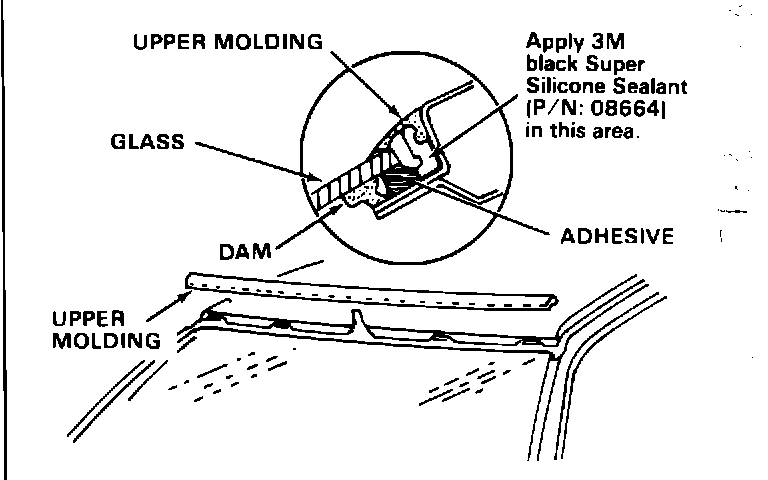

Windshield - Whine or Hum Noise
87acura01December 21, 1987
YEAR MODEL APPLICATION
'86-88 LEGEND ALL
SEDAN
87-038
Legend Sedan Windshield Noise
SYMPTOM
A "whine" or "hum" from the upper part of the windshield when the car is driven at highway speed.
NOTE: The speed at which the noise is heard may be affected by strong head or tail wind.
DIAGNOSIS
NOTE:
^ Use method 3 if the noise cannot be verified at speeds below the speed limit applicable in your test area.
^ When using method 1, you will need an assistant to push on the passenger side of the windshield.
Method No. 1: Test drive the car: when the noise is audible, push against the top of the windshield at several locations. If the noise changes in pitch or volume, the upper windshield molding is the cause.
Method No. 2: Mask off the windshield molding by apply tape along the molding's upper and lower edges. Test drive the car. If the noise is no longer audible, the upper windshiled molding is the cause.
Method No. 3: With your assistant inside the car, direct compressed air under the lower edge of the windshield molding. While testing, hold your air nozzle about on-half inch from the molding and move back and forth across the windshield. If an amplified version of the noise is audible inside the car, the upper windshield molding is the cause.
CORRECTIVE ACTION
1. Remove the windshield side molding as shown in the service manual.
2. Pull the upper windshield molding with pliers from one side of the car while your assistant pushes it witht he shaft of a screwdriver from the other side.

3. Clean the upper windshield molding and all areas it contacts with 3M General Purpose Adhesive Cleaner (P/N: 08984), or equivalent.
4. Apply a liberal amount of 3M Black Super Silicone Sealant (P/N: 08664), or equivalent to the underside of the upper windshield molding. Do not apply sealant over the clips; the sealant may interfere with their locking action.
CAUTION: Do not use an adhesive-type sealant. An adhesive may cause damage to the molding if the molding is removed at a later time.
5. Clip the upper windshield molding in place by tapping it down onto its clips, and then reinstall the side moldings.
WARRANTY CLAIM INFORMATION
Operation number: 831010
Flat rate time: 0.8 hour
Failed P/N: 73152-SD4-000
Defect code: 042
Contention code: B07